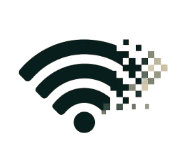
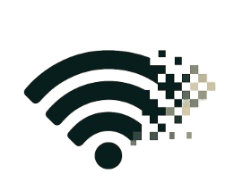

Vanishing WiFi Syndrome: The Silent Connectivity Crisis
The Internet's Greatest Magic Trick: Disappearing WiFi, The WiFi Enigma
About Us
 

Our OriginIt started with one too many dropped connections. Whether in the middle of a coding session, a critical meeting, or late-night research, the unpredictable nature of WiFi left users stranded at the worst possible moments. Having seen a pattern where WiFi signals seem to "vanish" without warning, an idea sparked: What if connectivity could be predictable, adaptive, and frustration free? Thus WiFix was born, offering solutions that keep users online, uinterrupted.
What We DoWiFix solves connectivity issues by predicting, optimizing, and seamlessly reconnecting networks. Our Pulse Net Tracjer anticipates signal drops before they occur, Echolink ensures auto-reconnection across multiple networks, and DarkSpot Detector pinpoints weka signals to help users optimize their setup. With our technology, disconnections become a thing of the past.
Our MissionTo empower individuals and businesses with predictive tools that ensure uninterrupted signal strength, bridging the gap between technology and effortless digital access.
Community ImpactOur technology enhances remote learning, smart workspaces and everyday connectivity, ensuring stable access where it's needed most.
Our Products

DarkSpot Detector
Description: Maps out weak signal areas and provides optimization solutions. Who it's for: Offices, households, and travelers relying on stable networks. How it works: Scans the environment, analyzes signal strength, and offers smart recommendations for improving network reliability. KEY FEATURE Uses real-time analytics to spot dead zones before users experience connection loss.
CHART NETSURVEYOR TENSORFLOWChoose Your WiFi type:
Frequently Asked Questions
Yes! It directly connects to the strongest network available without your intervention.
Yes! Our tools support all devices: smartphones, tablets, laptops and computers.
Yes! Our tools ensure stable WiFi for smooth gameplay and faster downloads as well as uninterrupted video calls.
Meet the Team
Noah Kipkechem
Founder
Web Developer
Passionate about immersive, interactive tech, Noah focuses on web development and user ease browsing the website.
John Wesley
UI/UX Designer
Head of Network Engineering
Wesley specializes in networking and human-centered designs, ensuring products are intuitive, properly functional and accessible for all users.
Polycarp Irungu
AI Systems Developer
Marketing & Community Specialist
With a passion for predictive technologies, Polycarp focuses on machine learning innovations that keep WiFi stable.
Assistant